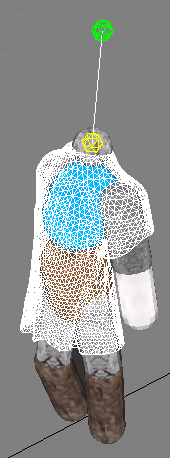

Cloth Creation
A cloth is defined using a mesh which specifies cloth particle
positions (vertices) and the constraints between them (edges). Below is a simple uniform triangle mesh used to represent a curtain.

More complicated cloths, such as the mesh
below used to define a T-Shirt shape, can also be created.

Creating a Cloth Mesh
Similarly to a triangle mesh, it is necessary to cook a cloth mesh into a suitable
format for simulation. To do so, fill in an NxClothMeshDesc structure and
pass it to NxCookingInterface::NxCookClothMesh(). This function
returns a stream of
bytes that can either be saved and reused later or fed to
NxScene::createClothMesh().
Once the NxClothMesh has been created, it can be instanced in the form
of NxCloth objects to go with the mesh. For example, one T-Shirt cloth mesh may have many instances, for things like differentiating characters,
or to illustrate certain conditions such as stiffness.
Examples
A Uniform Patch
/*
** Generate a uniform cloth patch, w and h are the width and height, d is the distance between vertices.
*/
NxClothMeshDesc desc;
int numX = (int)(w / d) + 1;
int numY = (int)(h / d) + 1;
desc.numVertices = (numX+1) * (numY+1);
desc.numTriangles = numX*numY*2;
desc.pointStrideBytes = sizeof(NxVec3);
desc.triangleStrideBytes = 3*sizeof(NxU32);
desc.points = (NxVec3*)malloc(sizeof(NxVec3)*desc.numVertices);
desc.triangles = (NxU32*)malloc(sizeof(NxU32)*desc.numTriangles*3);
desc.flags = 0;
int i,j;
NxVec3 *p = (NxVec3*)desc.points;
for (i = 0; i <= numY; i++) {
for (j = 0; j <= numX; j++) {
p->set(d*j, 0.0f, d*i);
p++;
}
}
NxU32 *id = (NxU32*)desc.triangles;
for (i = 0; i < numY; i++) {
for (j = 0; j < numX; j++) {
NxU32 i0 = i * (numX+1) + j;
NxU32 i1 = i0 + 1;
NxU32 i2 = i0 + (numX+1);
NxU32 i3 = i2 + 1;
if ((j+i)%2) {
*id++ = i0; *id++ = i2; *id++ = i1;
*id++ = i1; *id++ = i2; *id++ = i3;
}
else {
*id++ = i0; *id++ = i2; *id++ = i3;
*id++ = i0; *id++ = i3; *id++ = i1;
}
}
}
Cooking
gCooking->NxInitCooking();
NxClothMeshDesc desc;
//...
//Cook the mesh on the fly through a memory stream.
//A file stream could also be used to pre-cook the mesh.
MemoryWriteBuffer wb;
if (!gCooking->NxCookClothMesh(desc, wb))
return false;
MemoryReadBuffer rb(wb.data);
mClothMesh = mScene->getPhysicsSDK().createClothMesh(rb);
Creating a Cloth
Fill in an NxClothDesc
structure and call NxScene::createCloth() to create a cloth. Parameters for the cloth
can be set either in the descriptor or later after the cloth has been
created. See Cloth Parameters for
details.
NxClothDesc desc;
NxMeshData receiveBuffers;
//Fill in receive buffers...
desc.clothMesh = mClothMesh;
desc.meshData = receiveBuffers;
mCloth = scene->createCloth(desc);
API Reference
Copyright © 2008 NVIDIA Corporation, 2701 San Tomas Expressway, Santa Clara, CA 95050 U.S.A. All rights reserved. www.nvidia.com